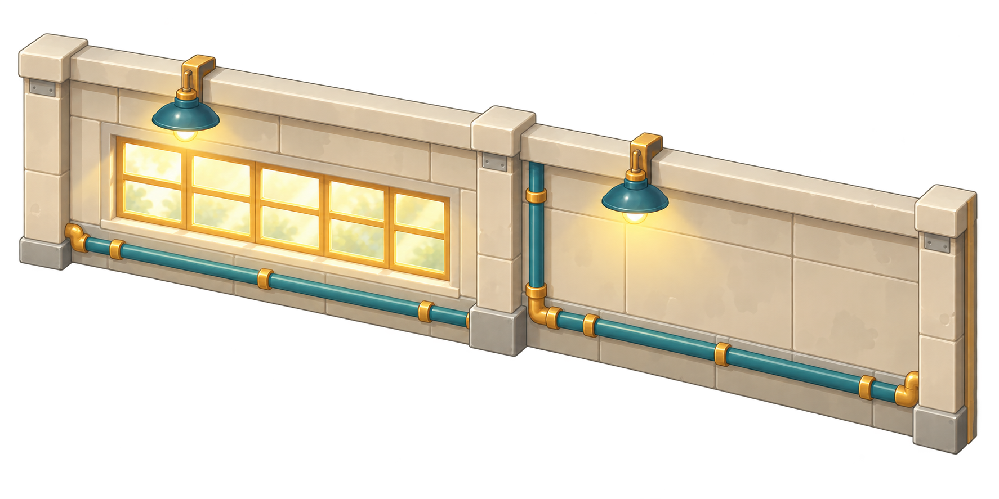
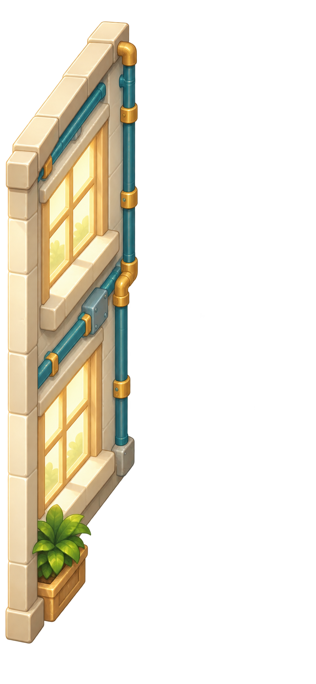

爆米花工厂 · 美术装配
生产演示
预览首页
首屏
包装与仓储
资源一览
扩建演示
390 × 844 工序演示 · 物料、动画、缓存与入库同步。时长和容量为美术演示参数，尚未接入正式经营数据。
场景
正常运行
缺料
包装积压
缓存满
暂停演示
推进1秒
重置演示
点击设备选择，加速仅推进当前工序。
实际装配
工厂
2,480
兔快递员
0/1
0/1
›


原味 · 1号线
出厂 Lv.2
库存 24
加速
提高产能
出厂升阶
工厂
棋盘
工厂页参考图 · 概念目标
资源载入中…